過去を受けとめ、現在を愉しみ、
未来へつなぐ。
新旧交代の今こそ、
世に問うワールドブレンデッド。
先人から受け継いだ仕事をやり遂げて次代に渡す者と、
その仕事を受けとめさらに未来へつないでいく者。
前チーフブレンダー 尾崎裕美と、現チーフブレンダー 井関潤治。
それぞれ異なる道を歩みつつ、
ウイスキーづくりの技術とサイエンス、
人智を超えた原酒の変貌を探究しつづけてきた。
今だからこそ、このふたりだからこそ成し得た幸せな仕事。
ニッカウヰスキーの探究の現在地が、ここにある。

尾崎 裕美おざき ひろみ
1988年ニッカウヰスキーに入社し、研究所に配属され酒類製造の技術開発に携わる。その後、アサヒビール酒類研究所にてRTD、焼酎等の商品開発、ニッカ栃木工場及び仙台工場(現：仙台 宮城峡蒸溜所)の品質管理部長、本社原料部長を歴任。2019年ブレンダー室長、2021年チーフブレンダーに任命され、2025年よりシニアブレンダーとなる。

井関 潤治いせき じゅんじ
1996年アサヒビール株式会社に入社し、ビールの製造と開発に携わった後、2001年よりニッカウヰスキーブレンダー室へ出向。
北海道工場(現：北海道 余市蒸溜所)での製造部長やニッカウヰスキー本社にて生産戦略立案や原材料調達などで経験を積み、2023年にブレンダー室長。2025年、チーフブレンダーに就任。
自らの挑戦が時を経て
共創に活かされたことに、
深い歓びを感じます。
このザ・ニッカ リミテッドでは、私が醗酵技術の開発に携わった、杏のような魅惑的な香りを放つ宮城峡モルトが大きな役割を果たしています。
200周年を迎えたベン・ネヴィス蒸溜所のやわらかく膨らみのある原酒とともに、程よくピートの効いた余市モルトと調和し、全体に甘さとやわらかさを与えつつも綺麗にまとまり過ぎない、複雑な個性をつくりあげることができました。
前チーフブレンダー 尾崎裕美

挑戦を止めない
ニッカウヰスキーの想いを、
この逸品に結晶させました。
数量限定のため、ブレンドに自由で多様な選択肢が与えられた中で特にユニークなのは水楢新樽モルト。アメリカンオークの新樽モルトと異なり、青竹のような清々しさに驚かされます。
余市モルトでありながら熱帯の果実の香り立つ原酒、かつてない試みに果敢に挑んだ新しいグレーン原酒なども特徴的です。多彩な原酒で構築した複雑さがありながら、飲みやすさもあるブレンデッドに仕上げました。
現チーフブレンダー 井関潤治
清々しく香る水楢新樽モルト、甘く誘う宮城峡モルト、
膨らみのあるベン・ネヴィスモルト、
トロピカルな余市モルト、新たな挑戦によるグレーン。
多彩な個性が、豊かに調和する。
テイスティングノート
潮風を思わせるピートの香り、キャラメリゼしたクレームブリュレのような香ばしい甘さと共に、
胡麻の深みを感じる樽香と、青竹にも似た清冽な樽香が心地よく調和。
ワクシーなニュアンスが全体を包み込み、霞のかかった森のような印象を与えます。
フルーティーな甘さと、ダークチョコレートのようなビター感の中に
樽由来のウッディさが重なる、やわらかな厚みのある味わい。
穏やかなピートのコクと、ドライフルーツを思わせる甘さが心地よく続きます。
容量 700ml
アルコール分 48%
参考小売価格（税抜）
150,000円
※参考小売価格は、お特約店様・ご販売店様の自主的な価格設定を拘束するものではありません。


自らの原点、余市での日々。
託した挑戦が、時を経て
別格の個性を現した。
私のキャリアはアサヒビールで始まり、ビールの研究開発を担当していたこともあり、ウイスキーについてはブレンダー室に行くまで、ほとんど知りませんでした。ブレンダーに着任して驚いたのは、ウイスキー原酒のバラエティーの多さです。さらに、その原酒をブレンドして無限の味わいを生み出すこと、その原酒をつくり残してくれた諸先輩方のように多くの原酒を後輩に残していくことが自分の使命である、と痛感しました。ブレンダーとして2010年まで余市での各種試験製造や製造原酒品質報告書を通じて余市原酒製造に関わり、その後2017年までは余市蒸溜所の製造部長として、実際の原酒製造に関わりました。
余市の原酒には思い入れの深いものが数多くあります。今回使用したトロピカルな甘さと厚みのある余市原酒は、私が余市にいた時に、ニッカウヰスキー所有の酵母ストックから地道に試作試験をして特徴的な香気を醸し出す酵母を選抜したことが発端で生まれ、その後余市蒸溜所やブレンダー室の担当者が引き継いで完成してくれたものです。膨大な原酒の多くを活かすべきザ・ニッカの限定品だからこそ、この個性的な原酒も採用したいと考えたのです。

ウイスキーの聖地で生まれた
余市・宮城峡原酒と異なる香り。
ベン・ネヴィスの衝撃。
1989年にニッカウヰスキーグループの一員になったスコットランドの西ハイランドにあるベン・ネヴィス蒸溜所は、2025年に記念すべき200周年を迎えました。創業者・竹鶴政孝が単身ウイスキーづくりを学んだスコットランドの地で長い伝統を持つ蒸溜所と、数十年にわたり強い絆を育んできたことは、ニッカウヰスキーにとって大きな意義があります。
私がベン・ネヴィス蒸溜所の実力を知ったのは、最初にブレンダー室に配属になり、先輩のブレンダーと一緒にベン・ネヴィス原酒をテイスティングした時のことです。その中には、余市や宮城峡とは明らかに違う、スコットランドの原酒らしい個性が感じられる原酒がいくつか存在しました。今回のブレンドにはベン・ネヴィス原酒を数種類使用していますが、中でもザ・ニッカ
リミテッドの複雑な個性に寄与しているのは、フルーティーな膨らみとワクシーさのある、ユニークな原酒です。ベン・ネヴィス蒸溜所の原酒は、私たちのウイスキーづくりにとって重要な働きをしているのです。


1+1が10にも100にもなる。
新グレーン開発で再認識した
ブレンドの魅力。
このザ・ニッカ リミテッドには、ニッカウヰスキーが行ってきた数々の挑戦が活かされています。その中でも特に挑戦的な門司工場とさつま司蒸溜蔵のグレーンウイスキーに、私は原料調達から関わってきました。
ニッカウヰスキーのグレーンの代表格は、今まではなんと言ってもカフェグレーンでした。創業者・竹鶴政孝が選んだ旧式の連続式蒸溜機によって生み出され、飲みやすさだけではなく、穀物由来の甘さや伸びをもたらすグレーンです。一方、門司とさつま司のグレーンは本来甘さよりもコクが際立つ酒質ですが、このカフェグレーンとブレンドすると互いの甘さを引き立てあうのです。これが、ただ「混ぜる」だけではない「ブレンド」の力であり、魅力です。受け継いできた膨大な原酒とともに新しい挑戦で原酒のバラエティを増やし、その可能性を最大限に活かしていく。これこそが、唯一無二の象徴的存在を表す“THE”を冠する、ザ・ニッカの使命だと思います。